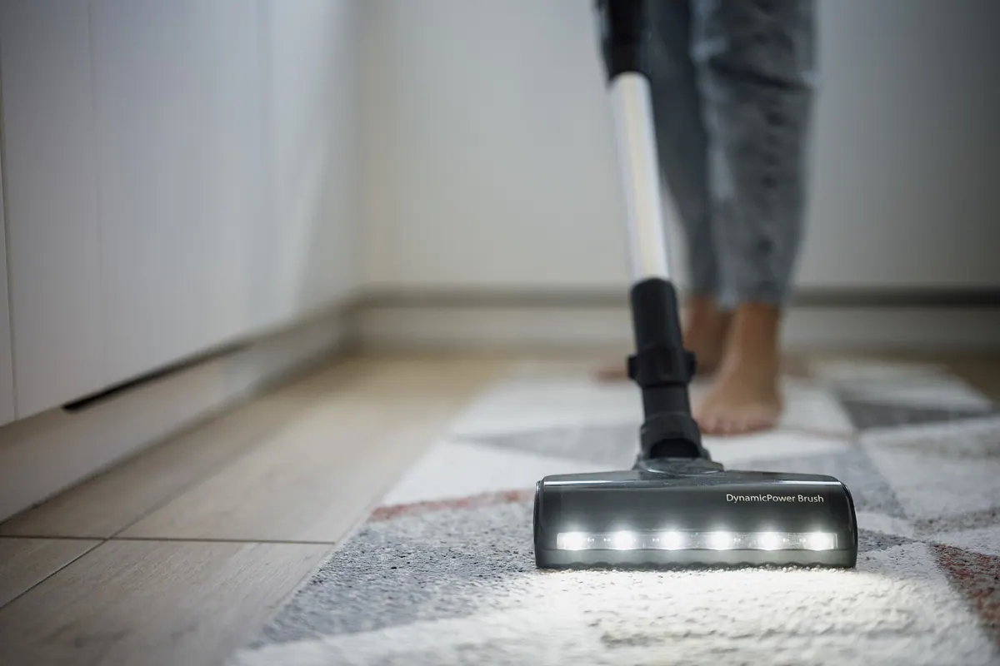
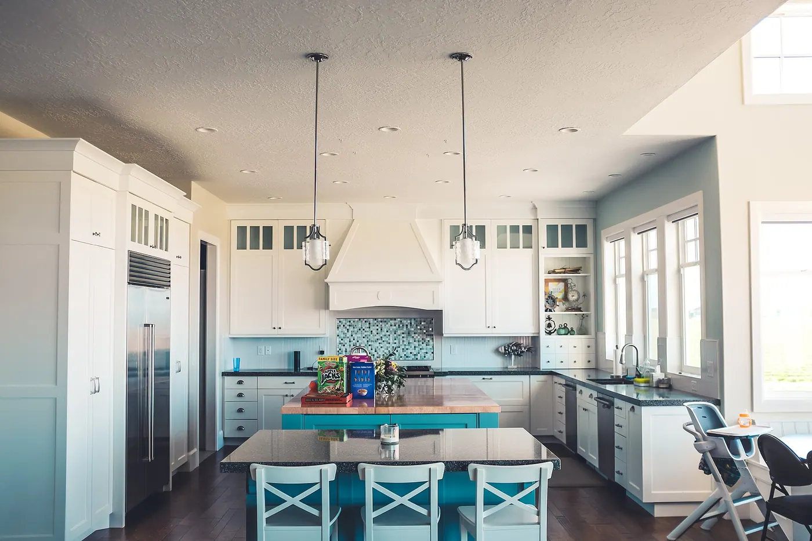

Tjänster · fast pris efter RUT
Fem städtjänster med fast pris i Stockholm
Hemstäd, flyttstäd, storstädning, fönsterputs och kontorsstäd. Priset räknas fram ur yta och tidsåtgång, och summan efter RUT står på offerten innan arbetet börjar. Spannet går från 274,50 kr i timmen för hemstäd till 449 kr i timmen exkl. moms för kontor.
Offert inom 2 timmar vardagar 07–18. RUT-registrerade hos Skatteverket sedan 2016.
Jämförelse
Fem tjänster i samma tabell
Tiderna gäller normal smutsnivå och tomma ytor där inget står i vägen. RUT ger 50 procent avdrag på arbetskostnaden, max 50 000 kr per person och år.
| Tjänst | Tid | Pris efter RUT | RUT | Avbokning |
|---|---|---|---|---|
| Flyttstäd | 8 minuter per m², minst 4 timmar | 324,50 kr/timme | Ja, 50 % | Senast 24 timmar innan |
| Hemstäd | 2,5–3,5 timmar per tillfälle | 274,50 kr/timme | Ja, 50 % | Senast 24 timmar innan |
| Storstädning | 5 timmar för 75 m² | 299,50 kr/timme | Ja, 50 % | Senast 24 timmar innan |
| Fönsterputs | Debiteras per båge, inte per timme | 39,50 kr per båge | Ja, 50 % | Senast 24 timmar innan |
| Kontorsstäd | 1,5 timmar per tillfälle för 120 m² | 449 kr/timme exkl. moms | Nej, RUT gäller inte företag | Senast 48 timmar innan |
Dra i tabellen i sidled för att se alla kolumner. På telefon visas varje rad som ett kort med etikett.
Fönsterputs har minsta debitering 1 200 kr före RUT. Under 1 200 kr faktureras ändå 1 200 kr före RUT, alltså 600 kr efter RUT.
Tjänsterna
Kort om varje tjänst
Varje tjänst har egen sida med checklista, prisexempel och tidsåtgång.
Flyttstäd
Tom lägenhet inför besiktning städas på 8 minuter per kvadratmeter, minst 4 timmar. 55 m² landar på 7,5 timmar och 2 433,75 kr efter RUT.
324,50 kr/timme efter RUT
Hemstäd
Återkommande städning varje eller varannan vecka, 2,5–3,5 timmar per tillfälle. 55 m² varannan vecka kostar 686,25 kr per tillfälle.
274,50 kr/timme efter RUT
Storstädning
Grundlig genomgång av ett hem du fortfarande bor i, 5 timmar för 75 m². Efter RUT blir notan 1 497,50 kr.
299,50 kr/timme efter RUT
Fönsterputs
Bågar, karmar och spröjs putsas för 79 kr per båge. Villa med 15 bågar kostar 1 185 kr före RUT och 592,50 kr efter.
39,50 kr per båge efter RUT
Kontorsstäd
Kontor, butik och trapphus städas på avtal för 449 kr i timmen exkl. moms. 120 m² två gånger i veckan ger 12 timmar i månaden och 5 388 kr exkl. moms.
449 kr/timme exkl. moms, ingen RUT
Ingår alltid
Vad som alltid ingår
Samma punkter oavsett tjänst, utan tillägg på fakturan.
- Dammsugning och våtmoppning av alla golv
- Avtorkning av köksbänkar, kakel och fläktkåpa
- Badrum: dusch, tvättställ, toalett och kakel
- Dammtorkning av lister, element och fönsterbleck
- Dammtorkning ovanpå skåp och garderober upp till 2 meter
- Sopsortering och utkast av hushållssopor
- Egen utrustning och Svanenmärkta medel
- Digitalt uppdragsprotokoll med checklista, tidsstämplar och foton

Så går det till
Så väljer du tjänst
Tre steg från osäker till bokad tid. Offerten är bindande i 14 dagar.
-
Mät ytan i kvadratmeter
Rummets golvyta räcker. En 3:a med kök ligger oftast på 68–78 m², och tiden räknas ut ur den siffran.
-
Välj tjänst
Storstädning om du bor kvar, flyttstäd om bostaden ska lämnas tom och besiktigas, hemstäd om städningen ska upprepas.
-
Boka med datum
Skicka datum, adress och yta i formuläret. Du får en bekräftad tid och ett fast pris efter RUT samma arbetsdag.
Avtal eller enstaka
Två sätt att köpa städning
Löpande avtal passar kontor och föreningar. Enstaka uppdrag passar flytt, storstädning och fönsterputs.
Löpande avtal
449 kr
per timme exkl. moms
Kontor och bostadsrättsförening. Faktura per månad, ingen RUT. Exempel: 120 m², 1,5 timme per tillfälle 2 gånger i veckan ger 12 timmar i månaden och 5 388 kr exkl. moms.
Läs om kontorsstädEnstaka uppdrag
324,50 kr
per timme efter RUT
Flyttstäd, storstädning och fönsterputs. RUT dras direkt på fakturan. Exempel: flyttstäd 55 m² tar 7,5 timmar och kostar 2 433,75 kr efter RUT.
Begär offertTillval
Tillval med fast pris
Fast pris per tillval, inga procentpåslag. Bokas i samband med uppdraget.
| Tillval | Pris | Kommentar |
|---|---|---|
| Ugn invändigt | 350 kr | Gäller både flyttstäd och storstädning |
| Kylskåp invändigt | 250 kr | Hylla för hylla, inklusive lister |
| Balkong | 200 kr | Räcke, golv och glasparti |
| Förråd | 150 kr | Upp till 5 m² i källare eller vind |
Dra i tabellen i sidled för att se alla kolumner. På telefon visas varje rad som ett kort med etikett.
Tillvalen får RUT-avdrag när de görs som en del av arbetet, utom vid kontorsstädning. Företag betalar hela beloppet exkl. moms.

Utrustning
Utrustningen kommer med oss
Städvagn, moppar, hinkar och trasor finns i bilen. Du behöver inte köpa något själv.
Varje team tar med egen utrustning och Svanenmärkta medel till uppdraget. Medlen är valda för att fungera på parkett, klinker och natursten, och de lämnar ingen film kvar på golvet.
Efter arbetet signerar du uppdragsprotokollet digitalt. Där ligger checklistan, tidsstämplarna och fotona på varje rum, vilket är det underlag hyresvärdar och besiktningsmän brukar be om.
Frågor och svar
Frågor vi får varje vecka
Saknas din fråga, ring +46 70 494 90 87 eller mejla vberg024@gmail.com.
Vad skiljer flyttstäd från storstädning?
Storstädning görs i ett hem du fortfarande bor i och tar 5 timmar för 75 m², vilket blir 1 497,50 kr efter RUT. Flyttstädning görs i en tom bostad som ska lämnas eller besiktigas och tar 8 minuter per kvadratmeter, minst 4 timmar, med insidan av skåp, lådor och vitvaror inräknad.
Kan företag använda RUT?
Nej. RUT-avdraget gäller privatpersoner och kan inte användas av företag eller bostadsrättsföreningar. Kontorsstädning faktureras därför 449 kr i timmen exkl. moms, och ett kontor på 120 m² som städas 2 gånger i veckan kostar 5 388 kr i månaden exkl. moms. Har du F-skatt lyfter du momsen i bokföringen.
Hur lång tid tar en flyttstäd av en 3:a?
En 3:a med kök på 72 m² tar 9,5 timmar, alltså en arbetsdag med två rum och kök redo tidigt. Priset blir 6 165,50 kr före RUT och 3 082,75 kr efter RUT. Protokollet signeras samma dag som arbetet avslutas.
Fast pris, protokoll och RUT-dragning på samma faktura. Offerten kommer inom 2 timmar på vardagar.
Boka tjänst eller begär offert